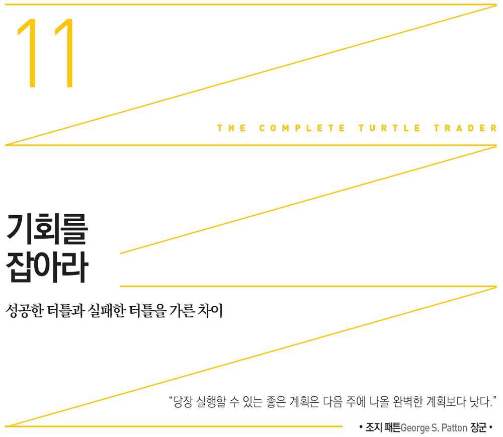
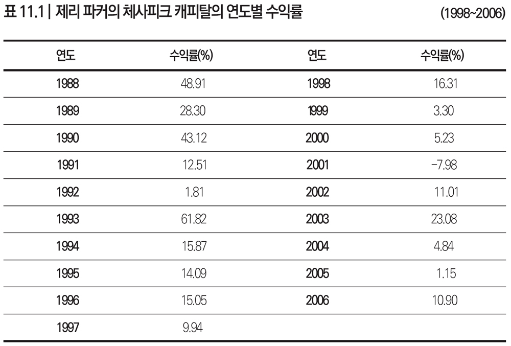

1994년 제리 파커 사무실을 찾아가기 위해 버지니아 리치몬드 외곽의 마나킨-사보로 운전해 간다고 상상해보라. 마치 지방 보험회사나 부동산 중개소가 있을 법한 콜로니얼 양식의 벽돌과 나무로 지어진 건물에 그의 사무실이 있으리라고는 누구도 예상치 못했으리라. 더욱이 건물은 시골길을 따라 있는 들판 옆에 있었다. 그 건물을 본 내 느낌은 한마디로 벼락을 맞은 것 같은 충격이었다.
사실 제리 파커의 사무실에 들어가는 순간, 은퇴가 임박한 70세 시골 변호사가 쓰는 케케묵은 방이 떠올랐다. 하지만 안내 직원은 가식이 없었고 편안하며 친절했다.
이곳에서 약 16킬로미터 떨어진 곳에 1995년에 마련한 새 사무실은 남부의 고상함과 성공의 이미지가 풍겨 이전보다 훨씬 더 품위 있어 보였다. 입구에서부터 이어진 두 개의 나선형 계단은 방 양쪽과 옥상의 헬기 착륙장으로 연결되었다. 그렇지만 여기를 방문하는 사람은 사전 예약 없이는 진입할 수 없었다. 까만 코팅 유리, 비디오카메라, 신분증 요구 등은 보안이 강조되는 요즘 사회에서는 놀라운 것들이 아니다.
현재 사무실은 제리 파커의 현실적 스타일이 반영된 듯 메리 로우Mary Lou & Co.나 헤어 네일스 앤 위그스Hair, Nails & Wigs 같은 가게가 들어선 1960년대식 스트립 몰 건너편에 자리하고 있었다. 이웃 교회에서 운영하는 유치원에 아이를 보낸 엄마들은 방과후 축구를 하는 아이를 데려가기 위해 체사피크 캐피탈 주차장에 차를 댔다. 한 터틀이 리치몬드 교외에서 엄청난 돈을 벌고 있었지만 이곳에서는 그를 주의 깊게 보는 사람이 아무도 없었다.
더욱이 제리 파커 사무실의 가구나 비품만 봐서는 그와 다른 터틀 사이의 재력 차이를 거의 알아채지 못할 것이다. 책상에 놓인 작은 거북이 외에는 대부분 실용적이고 평범한 장식이었다. 하지만 그와 그의 옛 파트너 러셀 샌즈는 재산에서 거의 10억 달러나 차이가 났다. 그 원인을 파악하는 것이 당초 터틀이 배웠던 트레이딩 기법보다 분명 더 중요하다.
중요한 점은 제리 파커, 리즈 체블, 톰 생크스, 하워드 세이들러, 짐 디마리아, 폴 라바, 그리고 이들의 스승인 빌 에크하르트에게는 리처드 데니스의 트레이딩 규칙을 넘어서는 기업가적 수완이 있었다는 사실이다. 즉, 뭔가 특별한 점이 있었다는 것이다. 어느 분야에서든 성공하는 사람들은, 언제 어디서나 기회는 있으며 그 기회를 잡아야 할 때가 있음을 아는 이들이다. 이들은 이 순간을 적극 노리는 사람들이다.
리처드 데니스는 종국에 자기 제자들 모두 그런 기회를 노렸다고 생각했을까? 터틀이 독립하기 전인 1986년 그는 본인이 터틀 광고를 봤다면 어떻게 반응했을지에 대해 질문받은 적이 있다. 그는 이렇게 대답했다. “저라도 지원했을 겁니다. 합격만 하면 틀림없이 일생일대의 최고 기회였을 테니까요. 분명 열네 명 모두 최고 트레이더가 되지는 못했겠지만 두세 명은 정말 뛰어난 트레이더가 되리라 생각했습니다.”
제리 파커는 크게 성공했다. 페럼대학과 버지니아대학교를 나온 그는 독실한 기독교인이자 가정적인 아버지로서 아내와 함께 집에서 세 자녀를 교육시켰다.
그는 고지식한 편이었지만 때로는 쉬기도 하면서 스포츠를 즐겼다. 시카고 불스의 마이클 조던이 뛰는 결승전은 빼놓지 않고 좋은 자리를 예약했다. 요즘은 샬로츠빌의 새로운 존 폴 존스 경기장에 찾아가 버지니아대학 캐벌리어스 농구팀을 응원한다.
제리 파커가 리처드 데니스 밑에 있을 당시에는 지금처럼 크게 성공할 것이라고 누구도 예상하지 못했다. 터틀 수련 첫해에는 손실이 -10퍼센트에 이르렀다. 이후 전열을 가다듬어 3년간 뛰어난 성과를 실현했지만 말이다. 하지만 스승 밑에 있을 때 그리 많은 돈을 벌지 못한 이유는 운용을 못해서가 아니라 배분받은 금액이 적었기 때문임을 알아야 한다. 그는 스승의 자금 배분 방식이 조금은 못마땅했을 테지만 어쨌든 터틀 수련은 그의 발전에 커다란 도움이 되었다.
제리 파커가 리처드 데니스를 위해 매매하면서 얻은 가장 큰 교훈은 바로 자신감이었다. “스승님의 시스템으로 트레이딩하면서 거둔 엄청난 성공은, 제가 기술적 분석을 활용할 수 있도록 이끌어준 정말 중요한 경험이었습니다.”
톰 생크스도 멘토의 중요성에 대한 제리 파커 의견에 전적으로 동의했다. “제 트레이딩은 단연코 리처드 데니스의 시스템에 기반을 두고 있습니다. 매매와 관련한 모든 운용 철학은 분명 스승으로부터 배운 원칙에 바탕을 두고 있습니다.”
제리 파커와 리처드 데니스는 여전히 정치적으로 서로 반대편에 있다. 제리 파커는 버지니아주 공화당 후보를 가장 열성적으로 지원하는 사람 중 하나다. 그가 1995년 이후 지금까지 그곳의 가장 보수적인 후보들에게 후원한 금액은 50만 달러가 넘는다. 그는 정치에 입문할 생각이 없었지만 재산과 정치적 영향력으로 보면 버지니아 주지사 후보감으로 전혀 손색이 없었다.
제리 파커의 정치적 견해는 고른 지지를 받을 만하다. “세금이 늘어 재정이 흑자면 납세자는 세금을 돌려받아야 마땅합니다. 물건을 살 때 돈을 더 많이 내면 잔금을 돌려받는 이치와 같습니다.”
어쨌든 1988년부터 2006년까지 제리 파커가 거둔 실적을 보면 터틀 스토리가 오늘날에도 가치가 있음이 분명해진다. 제리 파커가 공개한 자료와 펀드 규모, 표준 수수료 구조를 감안했을 때 그의 재산에 대한 가장 근접한 추정치는 7억 7,000만 달러 수준이다.

출처: 미 상품선물거래위원회에 제출한 자료
위 20년 동안의 수익률은 복리를 감안하지 않은 수치다. 연복리 10퍼센트를 적용하면 그의 재산은 17억 5,000만 달러로 추산된다.
제리 파커의 다른 터틀 대비 차별점
“리처드 데니스 회사에 채용되려면 정말 똑똑해야만 한다.” 이처럼 지능만이 터틀의 탁월한 트레이딩 실적을 설명하는 요인이라 생각하기 쉽지만 이는 오산이다. 그럼에도 많은 터틀들이 뛰어났다. 이들의 지적 능력을 무시해서는 안 된다.
하지만 높은 IQ가 성공의 열쇠는 결코 아닌 듯하다. 수백 명의 미국 최고 MBA 출신 직원들이었다면 엔론의 파멸을 막았을지도 모른다.
실제로 밝혀진 것처럼 거대기업 CEO들은 대부분 아이비리그 대학에 다니지 않았다. 이들은 크고 작은 주립대학이나 덜 알려진 사립대학 출신이다. 전체 CEO 중 10퍼센트만이 아이비리그 대학 출신이지만 대부분의 사람들은 그 비중이 훨씬 더 높다고 착각한다.
리처드 데니스 밑에서 일한 뒤 트레이딩으로 엄청나게 성공한 터틀과 실패한 터틀 사이를 가른 차이점은 기업가적 스킬에 대한 이해와 응용이었다. 트레이딩 규칙을 배우기는 했지만 기업가적 소양이 없는 터틀은 실패할 수밖에 없었다. 오랫동안 기업가 정신을 연구한 베일러대학의 낸시 업튼Nancy Upton과 돈 섹스턴Don Sexton 교수는 제리 파커와 다른 기업가들이 지닌 특성을 다음과 같이 정리했다.
1. 잘 순응하지 않음: 자립심이 강해 순응할 필요성이 적다.
2. 정서적 초연함: 남을 크게 신경 쓰지 않지만 타인에게 차갑게 대하지도 않는다.
3. 스카이다이버 같은 도전정신: 물리적 위험에 대해 덜 걱정한다. 하지만 나이가 들면 바뀐다.
4. 위험 감수: 위험을 기꺼이 무릅쓴다.
5. 뛰어난 사회성: 남을 잘 설득한다.
6. 자율성: 독립성이 강하다.
7. 변화 추구: 새로운 접근법을 좋아한다. 99퍼센트의 사람들은 그렇지 않다.
8. 넘치는 활력: 더 많이 요구한다. 더욱더 오래 일하는 능력이 있다. (둘 모두이거나 둘 중 한 가지에 속한다.)
9. 자족 능력: 동정하거나 안심시킬 필요가 없다. 하지만 극단적으로 흐르지 않기 위해서는 네트워크를 형성할 필요가 있다.
우리는 위 아홉 가지 요소를 과소평가해서는 안 된다. 리처드 데니스는 조명을 밝히고 브로커, 돈, 시스템까지 제공했다. 터틀 수련생들은 리처드 데니스 없이 성공할 능력과 의지가 있는지 스스로에게 물어야 했다. 당시 이를 알았든 몰랐든 성공하기 위해서는 이 아홉 가지 특성을 잘 적용했어야 했다.
제리 파커는 터틀 수업을 마치면서부터 위 아홉 가지 특성을 잘 활용했지만 많은 터틀들이 그렇지 못했거나 그럴 마음이 없었다. 제리 파커는 언젠가는 리처드 데니스에 버금가는 돈을 벌 수 있으리라는 강한 믿음이 있었다. 다른 터틀들은 1986년 리처드 데니스가 8,000만 달러의 수익을 올리는 모습을 처음 접했을 때 “나는 결코 할 수 없는 일”이라고 생각했을 것이다. 정말 운 좋게 터틀이 되었다고 털어놓은 터틀들도 있었고, 동료를 묘사할 때 “소심하거나 겁이 많다”는 단어를 쓰는 친구들도 있었다.
하지만 제리 파커에 대해서는 누구도 그렇게 묘사하지 않았다. 제리 파커는 딱 집어서 말하지는 않았지만 성공의 진정한 요인은 기업가들이 지닌 위 아홉 가지 특성임을 간접적으로 인정했다. “우리는 프랑스 주식시장이나 독일 채권시장에 정통한 전문가에는 별 관심이 없습니다. 하버드 MBA나 골드만 삭스 출신으로 꾸린 거창한 조직 따위는 필요 없다는 뜻입니다.”
소규모 인문대학의 장점을 극찬한 《삶을 변화시키는 대학Colleges that Change Lives》의 저자 로렌 포프Lauren Pope는 제리 파커의 금언에 담긴 뜻을 높이 평가했다. “아이비리그나 다른 A급 대학들은 졸업생들이 취직도 잘되고 성공가도를 달릴 수 있다는 기대 때문에 많은 특권을 누리고 있다. 하지만 자식을 아이비리그 대학에 입학시키기만 하면 성공이 보장된다고 생각한다면 오산이다. 지금과 같은 경제 시스템에서는 동문 인맥은 별 도움이 되지 못한다. 중요한 것은 능력이다.”
능력은 쉽게 터득되지 않는다. 제리 파커는 홀로 사업을 꾸리는 일에 비하면 터틀 수련 생활은 아주 편했다고 털어놓았다. “리처드 데니스 밑에서 트레이딩할 때에는 아침 7시에 출근해 일하다가 오후 2시가 되면 시카고 컵스 야구 경기를 봤습니다.” 하지만 직접 고객 돈을 맡아 운용하면서부터는 자금 모집, 직원 고용, 리서치, 성과 측정, 운용까지 모든 것을 처리해야 했다. “성공은 부분적으로는 매수와 매도를 얼마나 잘하는지에 달려있습니다. 하지만 운용업도 비즈니스이므로 고용, 회계, 법률, 마케팅까지 모두 잘 챙겨야 합니다.”
제리 파커의 뛰어난 사업적 기질의 원천은 리처드 데니스만이 아니었다. 실제로 그가 가장 좋아하는 책은 현대 마케팅의 바이블인 《보이지 않는 것을 팔아라Selling the Invisible》이다. 그렇지만 그는 항상 공을 스승에게로 돌렸다. “정직하고 겸손한 스승이 있다면 가장 좋겠죠. 다른 사람들에게 배우세요. 날마다 옳은 일을 하고 업무에 매진한 뒤 결과를 기다리는 자세가 필요합니다.”
짐 디마리아는 터틀 프로그램 종료 후 제리 파커가 틀림없이 성공할 것이라고 보았다. “제리는 많은 돈을 모집하고 싶어 했습니다. 첫날부터요.”
진정 원하는 것을 정하라
《시장의 마법사들》 출간 이후 많은 터틀은 탄탄한 사업 기반을 구축하기 위한 노력은 하지 않은 채 자신들의 명성만 믿고 안주했다. 제리 파커는 잡지 표지에 나오는 것이 목표가 아니었다(리치몬드 외곽 사무실을 둘러싼 흰 말뚝 울타리에 기대선 모습이 1994년 〈파이낸셜 트레이더Financial Trader〉에 나온 적은 있지만 말이다). 결코 그렇지 않았다. 그는 ‘엄청난’ 돈을 벌기를 원했다.
조너선 크레이븐Jonathan Craven은 체사피크에 고용된 두 번째 사람이었다. 그는 지금은 자신의 회사를 차려 2,000만 달러를 굴리고 있다. 그는 제리 파커의 원칙을 결코 잊지 못한다고 했다. 제리 파커가 “두 가지를 믿어야 한다”고 하자 조너선 크레이븐이 물었다. “그게 뭐죠?” 제리 파커가 답했다. “신과 우리 시스템입니다.” 이에 조너선 크레이븐이 덧붙였다. “시스템이 잘 돌아간다는 확신이 있어야겠죠. 그렇지 않으면 밤잠을 설칠 테니까요.”
조너선 크레이븐의 말에 함축된 의미는 무엇일까? 제리 파커를 따라 하는 트레이더들이 쓰는 시스템과 규칙은 특정 시장에만 국한되어있다고 생각하는 사람들이 많다. 제리 파커 방식의 매매를 배운 사람들은 순진하게도 그가 오로지 상품 시장에만 투자했다고 여긴다. 하지만 제리 파커는 리처드 데니스의 철학을 모든 시장에 적용했다. 그는 스승으로부터 원래 배운 원칙을 전 세계 모든 시장에 적용하려 했다. 즉, 어느 시장이든 가리지 않았다. 중국 도자기, 금, 은 등 존재하는 모든 시장과 현재는 없어진 시장, 그리고 자신이 투자한 적은 없지만 다른 사람들이 투자해 많은 돈을 버는 시장에도 관심을 기울였다.
조너선 크레이븐은 제리 파커 밑에서 일하는 동안 다양성의 철학을 배웠다. 투자한 시장의 개수는 늘 유동적이었다. “예순다섯 개 시장에 투자할 때도 있었고 서른 개 시장에 투자할 때도 있었습니다.” 그가 이런 질문을 받은 적이 있다. “항상 포지션을 들고 있습니까? 최대 몇 개 포지션까지 보유합니까?” 그러자 이렇게 대답했다. “상황에 따라 다릅니다. 시장이 계속 옆으로 움직이면 이론적으로는 보유 포지션이 제로입니다. 시장이 위로든 아래로든 추세를 보이면 어떨까요? 예순다섯 개 포지션도 보유할 수 있겠죠.”
안타깝게도 돈을 벌기 위해 시장을 가리지 않는 제리 파커의 투자 방식을 매니지드 퓨쳐스managed futures(선물 매매형) 또는 CTA(상품 투자 자문Commodity Trading Advisor)라고 잘못 알고 있는 경우가 종종 있다. 이 둘은 헤지펀드 감독당국이 쓰는 용어로, 대부분의 경우 트레이더들 때문에 혼동이 가중되었다. 제리 파커도 이 점을 바로 인정했다.
“투자 시장을 한정하는 ‘매니지드 퓨쳐스’라고 스스로 정의내린 것도 저희 잘못입니다. 저희 전문성이 이곳에 있을까요? 아니면 시스템 추세추종이나 모델 개발에 있을까요? 우리는 중국 도자기든 금이든 은이든 주가지수 선물이든 추세가 있는 곳이라면 어디든 투자합니다. 투자 대상을 전 세계로 넓히고 저희 시스템 트레이딩의 전문성을 알릴 필요가 있습니다.”
그는 자신의 전문성을 알리려 애썼지만 늘 어려움이 따랐다. 제리 파커와 상반되는 트레이딩 철학으로 운용하는 사람들은 ‘상품commodity’이라는 단어를 일부러 부정적인 느낌이 나도록 썼다. 항상 강조하지만 터틀의 추세추종은 ‘전략’이다. 이 트레이더들은 금, 통화, 에너지, 곡물, 금, 채권, 원자재까지 전 세계 어디든 가리지 않고 투자한다.
제리 파커는 성공가도를 달리고 있었지만 여전히 많은 동료 터틀을 침몰시킨 편견과 힘겨운 싸움을 계속해야 했다. 시스템이나 컴퓨터 매매를 너무 부정적으로 보는 사람들이 있었기 때문이다. “우리의 전문성을 제대로 전달하지 못했다고 봅니다. 저희 전략은 서로 다른 수많은 시장에 잘 먹힙니다. 오늘 뜨겁게 달아오르는 시장이 있는가 하면 그렇지 못한 시장도 있습니다.”
펀더멘털 투자의 문제점
오늘날 많은 최고의 헤지펀드 매니저와 마찬가지로 제리 파커도 지역사회에 기부한다. 그는 50만 달러를 들여 버지니아대학에 ‘체사피크 캐피탈 트레이딩 룸’을 만들어주었다. 이곳은 실제 트레이딩 룸처럼 아주 세련되게 디자인되었다. 고맙게도 버지니아대학 금융혁신 맥킨타이어 센터The Mclntire Center for Financial Innovation의 밥 웹Bob Webb 이사가 나를 위해 이 시설을 안내해주었다. 수많은 트레이딩 데스크와 벽에 붙은 대형 스크린을 보면 제리 파커가 기부한 돈이 얼마나 유용하게 쓰였는지 알 수 있다.
버지니아대학 금융학 교수이기도 한 밥 웹은 체사피크 캐피탈 트레이딩 룸을 가리켜 ‘금융시장에서 벌어지는 일을 실시간으로 보여주는 이상적 교육 환경’이라 치켜세웠다. 이곳 학생들은 시장이 뉴스에 어떻게 반응하는지 관찰할 수 있다. 아울러 최근의 시장 변화를 살피고 이를 촉진시키는 요인이 무엇인지도 파악할 수도 있다. 그는 학생들이 바로 경험해보도록 한다고 했다. 즉, 이들은 수업 첫날부터 실제 발생한 이벤트를 바탕으로 시장을 예측한 뒤 가격 변화를 일으키는 요인과 더욱 나은 매매결정을 내리는 데 도움을 주는 요소들을 조사한다.
칸막이로 나눠진 TV도 없는 제리 파커와 원래 터틀들의 수련 현장에 대해 잘 알지 못하는 어느 학생이 체사피크 캐피탈 트레이딩 룸을 신난 듯 자랑했다. “모든 회사의 정보를 검색할 수 있는 소프트웨어가 있다니 굉장하죠. 대차대조표, 손익계산서, 각종 재무비율과 성장 추이 등 모든 것을 다 볼 수 있습니다.”
밥 스피어Bob Spear는 ‘미케니카Mechanica’라는 시스템 테스트 소프트웨어 회사를 운영한다. 그는 대중용 트레이딩 시스템을 테스트하는 소프트웨어 중 가장 강력하다는 프로그램을 보유하고 있다.
제리 파커와 얼 키퍼는 수년 전부터 이 회사의 고객이다. 제리 파커를 사로잡은 것은 밥 스피어의 소프트웨어 광고였다. 광고 내용은 이러했다. “돈 버는 시스템을 정확히 짚어내 수익률을 엄청나게 향상시키는 트레이딩 레시피!” 드물게도 1994년 광고에서 (윌리엄 에크하르트가 위험관리라 칭한) ‘자금관리’라는 용어도 썼다.
당시 제리 파커는 터틀 트레이딩 시스템과 자금관리(4장과 5장 참조)를 테스트하는 소프트웨어가 있다는 사실을 알지 못했다. 소프트웨어에 대해 알아보려고 전화한 제리 파커를 밥 스피어는 첫 통화에서 바로 알아차렸다. “그가 제게 체사피크 캐피탈에 대해 설명할 필요는 없었습니다.”
제리 파커와 버지니아대학 교수 및 학생들의 말은 서로 모순이지만 이는 의도된 것이 아니다. 금융에 조예가 깊은 밥 웹 교수는 제리 파커의 철학과 정반대되는 내용을 가르치고 있다. 예를 들어, 밥 웹 교수는 연방준비제도이사회 위원들이 개별적 발언을 통해 금융시장에 영향을 끼칠 수 있다고 본다. 그는 이렇게 설명했다. “트레이더들은 연준 위원 각자 무슨 말을 하는지 잘 살펴야 합니다.” 그의 조언은 기본적 분석을 하는 많은 월가 전문가와 일반 대중에게 타당하게 받아들여진다. 하지만 체사피크 캐피탈 트레이딩 룸을 후원해 준 제리 파커의 트레이딩 접근법과는 거리가 멀다.
제리 파커는 스승인 리처드 데니스와 마찬가지로 매매결정을 내릴 때 연준 위원들의 목소리에 조금도 귀 기울이지 않는다. 실제 제리 파커의 표준 유의사항 문구에도 이런 내용이 있다. “체사피크는, 모든 시장의 향후 가격 움직임은 기본적 경제 분석보다는 정량적 기술적 분석의 과거 가격 움직임에 의해 더 정확하게 예측할 수 있다고 믿습니다.”
제리 파커는 기술적 분석에 기반한 트레이더는 자신이 투자하는 시장에 대해 전문 지식이 없어도 된다는 점을 기회가 있을 때마다 강조했다. “기상 현상이나 지정학적 사건에 대한 전문가일 필요가 없습니다. 세계의 특정 사건이 경제와 시장에 어떤 영향을 미치는지 자세히 파악하지 않아도 됩니다.”
설령 투자자들이 제리 퍼커의 터틀 투자 방식을 알고 투자한다 해도 이들은 계좌 잔고가 오르락내리락하는 모습을 보고 싶어 하지 않는다. 제리 파커의 고객들조차도 월간 수익률을 끊임없이 주시하면서 다음과 같이 압박했다. “벌어들인 월 수익을 토해내지 마세요.” “이 월간 수익률 데이터를 보니 걱정스럽네요.” “이번 달은 지난 달보다 못하군요.” 제리 파커는 딱 잘라서 말했다. “말도 안 되는 요구입니다.”
그가 덧붙여 말했다. “원금에서 10퍼센트 손실이 나면 심각한 문제일 수 있습니다. 하지만 수익률이 50퍼센트였다가 40퍼센트로 줄어들면 이는 전혀 문제가 되지 않습니다. 하지만 고객들은 그렇게 받아들이지 않죠! 이들은 최근 대비 10퍼센트 손실이 난 것만 생각하니까요. 그래서 우리가 고객 자금을 운용할 때에는 이와 같은 쓸데없는 수익률 문제로 시간을 허비하죠. 즉, 실제로는 위험한데 그렇지 않은 듯 보이려고 실적표를 미세조정하기도 합니다. 초기 자본에 대비한 위험과는 많이 다르게 보이도록 말이죠. 정말 우스꽝스러운 일입니다.”
불안에 떠는 고객들 입맛에 맞도록 실적표를 그럴싸하게 다듬는 작업은 제리 파커가 좋아하는 일은 아니다.
“우리가 아무리 운용을 잘해도 다음과 같이 말하는 사람이 늘 있습니다. ‘당신이 돈을 얼마나 많이 벌든 트레이딩을 얼마나 잘하든 상관없이 그저 당신들의 운용 스타일이 싫습니다. 가격에만 의존하는 트레이딩 방식을 좋아하지 않는다는 말입니다. 저는 원자재를 싫어해요. 왠지 야바위 같으니까요.’ 20퍼센트 손실을 보면 그들은 우리가 망할 것이라며 난리법석을 칩니다. 저희 수익률이 -12퍼센트일 때 실제로 제게 전화해 이렇게 말한 고객이 있었습니다. ‘결코 회복하지 못할 거요. 다시는 돈을 벌지 못할 거라고요. 그러니 이제 그만두시죠.’ 하지만 나스닥NASDAQ 지수가 40퍼센트 하락하면 이는 아주 좋은 매수 기회입니다.”
펀더멘탈(기본적) 분석 기반의 트레이더들에게도 불편한 진실이 숨어있다. 이들은 비밀리에 제리 파커와 아주 비슷하게 매매하는 경우가 종종 있다. 나스닥 지수가 40퍼센트 떨어지면 겉으로는 좋은 매수기회인 양 가치철학을 읊어대지만 실제 매매를 위해서는 추세를 살핀다.
제리 파커는 월가의 유명한 애널리스트인 네드 데이비스Ned Davis로부터 계량 정보를 구입할 때 이와 같은 모순된 현실을 직접 목격했다. 당시 그는 날마다 팩스를 받아 네드 데이비스와 자신의 포지션을 서로 비교 분석했다. 늘 의문을 던지는 습관이 있는 제리 파커는 네드 데이비스 사무실에 전화해 물었다. “제 포지션과 그쪽 포지션이 거의 똑같은 듯 보입니다.” 그들이 대답했다. “그렇습니다. 저희 분석이 아무리 좋아도 추세추종 요소를 덧붙이지 않으면 결과가 좋지 않기 때문입니다.”
그렇지만 가장 성공한 터틀인 제리 파커는 자신의 운용 스타일을 그럴싸하게 꾸미지 않았다. 대신 자기 트레이딩 스타일의 단점을 있는 그대로 밝혔다. 그는 자신의 투자 철학을 교과서에 나오는 운용 방식과 비교할 때에는 마치 주일학교 목사의 설교처럼 사실 그대로를 말했다.
“추세추종 방식은 민주주의와 비슷합니다. 좋아 보이지 않을 때도 있지만 다른 어떤 방식보다도 낫습니다. 바이 앤드 홀드Buy and Hold(매수해 보유하는 전략)을 쓰는 게 맞을까요? 저는 바이 앤드 홀드를 바이 앤드 호프Buy and Hope(매수한 뒤 그저 오르기를 희망하는 것)라 부릅니다. 손실이 나면 투자금을 두 배 늘려 물타기를 해야 할까요? 세상은 너무나도 넓어서 제대로 분석할 수 없습니다. 펀더멘털 분석 대상이 너무너무 많다는 말입니다. 우리는 추세추종 전략을 줄기차게 적극 알리고, 있는 그대로 설명할 필요가 있습니다. 즉, 좋은 투자 기회를 제대로 잡아주되 최악의 시나리오를 면하게 해주는 위험관리 시스템이라고 말입니다.”
헤지펀드의 파산
제리 파커의 투자세계에도 결국 전혀 예상하지 못한 사건들이 일어났다. 세상이 순탄하다고만 생각하는 사람이라면 언제든 당신을 날려버릴 수 있는 태풍에 대비하라. 2006년 아마란스Amaranth 헤지펀드(운용자산이 무려 60억 달러에 달했다) 파산에서 굳이 긍정적인 부분을 찾는다면 이 펀드에 투자한 주와 시의 연기금 담당자들을 당혹하게 했다는 정도이다. 영원히 시들지 않는 신비스러운 꽃을 뜻하는 아마란스에는 다른 숨겨진 의미가 있었다. 돼지 여물로 쓰이는 잡초이다.
이 ‘잡초’ 펀드는 ‘평균회귀’ 원리에서 시작했다. 평균회귀의 학문적 의미는 사람들을 움찔하게 할지 모르지만, 그 파급 효과를 이해한다면 아마란스와 롱텀 캐피탈 매니지먼트 헤지펀드가 파산한 이유를 이해할 수 있다.
평균회귀란 무엇인가? 시장 가격은 장기적으로 ‘평균으로 회귀하는’ 경향이 있다. 연구에 따르면 주가가 (어느 가격이든) 위로든 아래로든 지나치게 움직이면 결국 평균 수준으로 되돌아온다는 것이다. 하지만 주가가 하룻밤 사이에 정확히 제자리로 돌아오는 것이 아니다. 아주 오랫동안 저평가 또는 고평가 상태에 머물러 있을 수 있다.
바로 이 오랜 기간이 배를 침몰시키는 모래톱이다. 시장이 질서정연하게 움직인다고 생각해 차익을 노리고 베팅하는 사람들은 가짜 황금을 찾아 헤맨다. 제리 파커와 다른 터틀들은 옳은 일은 결코 쉽지 않다는 사실을 오래전에 리처드 데니스에게 배웠다.
“평균회귀는 대부분 잘 들어맞습니다. 그러다 어느 순간 작동하지 않기 때문에 투자자가 망하는 겁니다. 시장은 그렇지 않을 때 이외에는 늘 평균으로 회귀하죠. 기껏해야 ‘승률이 40퍼센트인 우리 시스템을 누가 좋아하겠습니까? 대부분의 매매에서 손실을 기록해 잔고가 원금을 밑도는 경우가 허다하고 열 번 투자해 큰 수익은 한 차례밖에 없으며 나머지는 본전이거나 손해니까요.’ 승률이 55퍼센트나 되고 매달 1~2퍼센트 수익을 올리는 평균회귀가 훨씬 좋아 보일 수밖에요. 그래서 ‘평균회귀 투자방식이 늘 옳다!’ 라고 생각합니다. 사람들의 반응도 좋습니다. 그러다 한 8년 정도 지나 평균회귀 원리가 통하지 않아 파산하게 되면 이 원칙도 쓸모없다는 걸 깨닫게 됩니다.”
제리 파커가 남부 특유의 억양으로 평균회귀에 대해 열을 올려 비판하는 말을 듣고 있노라면 정말 그렇구나 하는 생각이 든다. 그의 논점을 예를 들어 설명하면 다음과 같다. 투자자들은 지난 2년 동안 손해 본 달이 한 번도 없이 매달 2퍼센트씩 수익을 거둔 사실만 믿고 돈을 맡긴다. 이 펀드는 평균회귀 원리에 바탕을 두고 있기 때문에 6년 뒤 엄청난 손실을 겪게 되고 투자자들의 연금도 허공으로 사라진다. 사람들은 본능적으로 평균회귀를 믿지만 제리 파커는 경고한다. “그것은 치명적인 투자전략입니다.”
‘치명적’이라는 말은 목을 졸라 숨통을 끊을 수 있다는 뜻이 숨어있다. ‘대부분의 경우’라는 말에 의존해 투자해서는 곤란하다. 평균회귀를 믿는 투자자들은 홍수가 100년에 한 번 날까 말까 한다고 믿는다. 하지만 실제로는 2~3년 만에 발생해 전 재산을 쓸어가 버릴 수 있다는 사실을 알아야 한다.
제임스 리버 캐피탈
1994년 여름 버지니아 마나킨-사보에 있는 제리 파커 사무실 밖 간판에는 체사피크 캐피탈과 제임스 리버 캐피탈이라는 두 이름이 적혀있었다. 제임스 리버 캐피탈James River Capital은 버지니아주 지역색 덕분에 더욱 특별한 운용사가 된 듯하다. 이는 키더 피바디의 매니지드 퓨쳐스(선물 매매형) 본부에서 파생되어 나온 회사의 새 이름이다.
조너선 크레이븐은 제임스 리버 캐피탈이 체사피크 캐피탈의 출범에 아주 중요한 역할을 했음을 잘 알고 있다. 그가 이렇게 밝혔다. “저는 제임스 리버 캐피탈에 있는 사람을 통해 제리 파커를 만났습니다. 그 친구들이 저를 제리 파커에게 소개시켜줬고 결국 1990년 3월에 그 회사에 들어갔습니다. 저희는 꽤 오랫동안 제임스 리버 캐피탈 사무실의 일부를 빌려 썼죠.” 투자자였던 브래들리 로터가 덧붙였다. “제리 파커는 사업 초기에 아주 현명하게 움직였습니다. 폴 손더스와 케빈 브란트와 관계를 맺었으니까요.” 제리 파커가 그렇게 행동한 데에는 그럴 만한 이유가 있었다. 대중에게 터틀들을 멋지게 보이도록 홍보하는 데에는 증권회사만큼 좋은 파트너가 없었던 것이다.
반면, 얼 키퍼는 제리 파커의 성공에는 우연적인 요소가 있었다고 생각했다. “터틀 프로그램 종료 후 누가 대박을 터트릴지 미리 알기 어려웠어요. 일종의 복불복이었다고 봐야죠.”
‘복불복’이라는 표현이 정확히 들어맞지는 않지만, 얼 키퍼는 제리 파커의 엄청난 성공가도에는 우연한 요인들이 있다고 여겼다. “일종의 ‘도박사’에게 더욱 어울리는 다른 시대였다면 톰 생크스는 수십억 달러를 굴리는 반면, 제리 파커는 2억 5,000만 달러를 운용했을 겁니다. 일반 투자자의 자금을 운용하기를 원치 않은 터틀이 여럿 있었습니다. 이들은 항공기보다는 경주용 자동차를 몰고 싶었던 거죠.” 얼 키퍼는 제리 파커처럼 엄청나게 성공할 가능성이 있는 터틀들이 있었다고 생각했다. 다음은 그의 말이다. “만약 제리 파커가 아닌 폴 라바가 키더 피바디 사람들을 만났더라면 선생님께서는 일이십 억 달러를 운용하는 사람이 폴 라바라고 썼을 것입니다.”
그렇다고 얼 키퍼가 제리 파커를 깎아내리지는 않았다. “제리 파커는 때와 장소를 잘 만났고 찾아온 기회를 잘 움켜잡았습니다. 가장 긍정적으로 보면 그렇다는 겁니다. 살면서 접하게 되는 기회 앞에서 망설이는 사람들이 너무나 많습니다.” 그렇다. 결국 제리 파커는 방망이를 휘둘러야 하는 상황에서 승리하기 위해 있는 힘껏 공을 쳤다. 이겨야만 했기 때문이다. 스트라이크 존으로 온 힘을 다해 휘둘렀던 것이다.
그렇지만 제리 파커가 CNBC에 나와 뜻밖의 천재지변 상황에서 돈 버는 방법을 설명하거나, 폭스 뉴스에 나와 숀 해니티Sean Hanity나 앨런 콤스Alan Colmes와 정치 논쟁을 벌일 것이라 기대하지 마라. 대신에 버지니아 리치몬드 지역의 스타벅스에 가면 그를 만날 확률이 훨씬 더 높을 것이다. 모닝커피를 사러 갈 때 주위를 둘러보라. 그러면 당신의 연금을 운용하거나 여러분이 지지하는 정치인을 후원하는 훌륭한 트레이더를 만날 수 있을지도 모른다.